第一部分｜连上知识库
01｜三类知识库
ima 是搜、读、写一体的 AI 知识工作台，库分成个人、共享、订阅三类。
个人知识库：自己建的库，课程资料、随手笔记和 AI 产物都往里放，只有自己能看。
共享知识库：和小组同学共用一个库，作业资料大家一起攒、一起用。
订阅知识库：知识库广场里别人整理好的库，看中哪个订阅哪个，订阅完马上能查。
这三类库接上 WorkBuddy 之后，里面的资料它都能直接检索和引用。
02｜一次授权
授权走一次，之后查资料、存文件都不用再问一遍。
找到入口：在 WorkBuddy 的「专家·技能·连接器」里找到 ima 知识库，点进去发起连接。
扫码确认：页面弹出 WorkBuddy 申请访问 ima 的二维码，用微信扫一下确认。授权跟着微信账号走，哪个号登录的 ima，就用哪个号扫。
连上的标志：连接器里 ima 知识库显示已连接，新建任务时就能引用库里的资料。
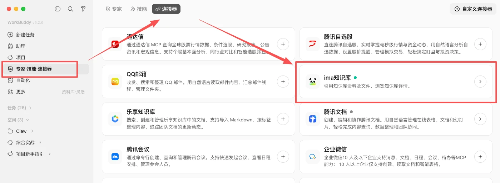
连接器里找到ima知识库
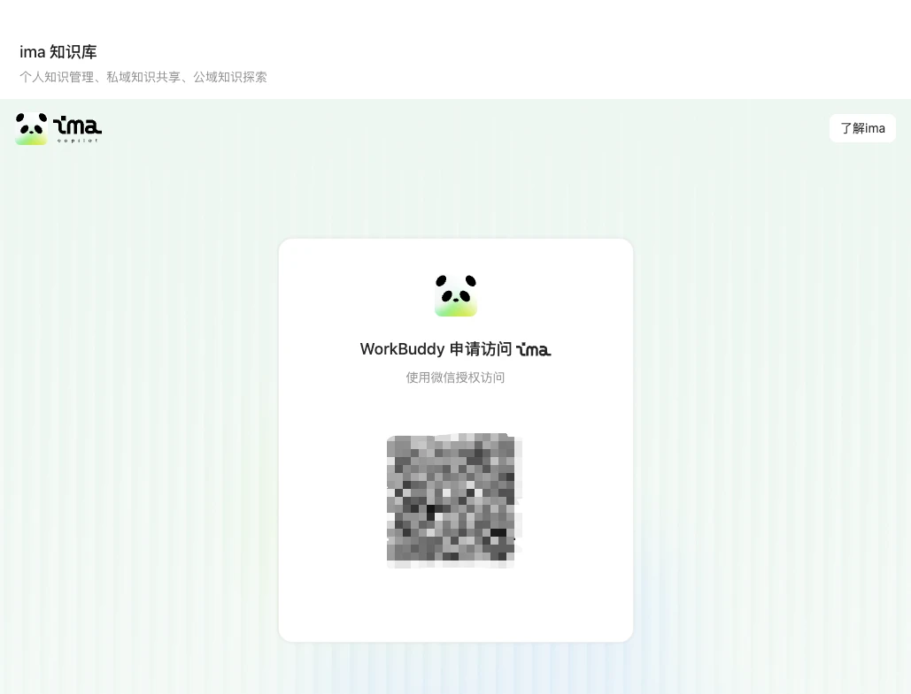
微信扫码确认授权
03｜两种引用
要用哪几份资料，就在哪一步把它交给任务。
资料库挑文件：打开 ima 知识库，进到具体某个库，勾选要用的文件，点「添加到任务」。清楚这次要用哪几份资料时走这条路最快。
对话框里选：在对话输入框点加号，选「添加文件 › ima 知识库」，再从库里挑。边聊边把资料递进去时用这个入口。
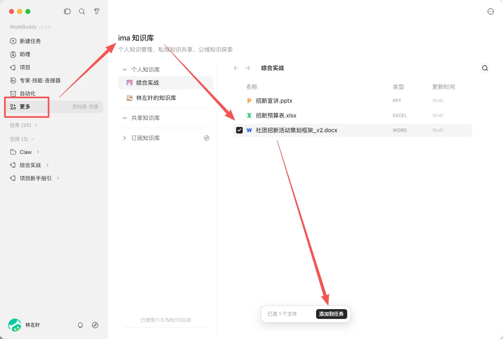
资料库选中文件添加到任务
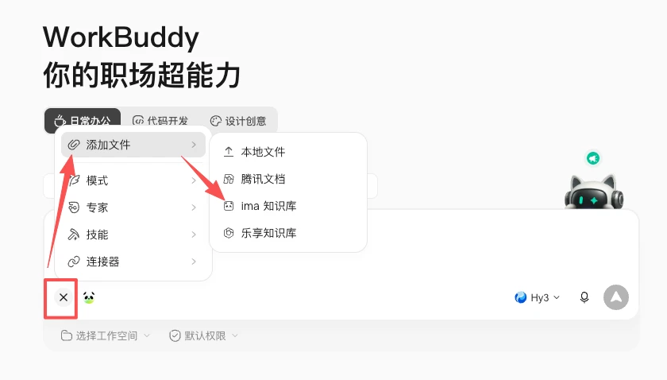
对话框添加文件选ima知识库
第二部分｜用现成的库
04｜订阅知识库
用不着自己先攒半年资料，广场里有大量整理好的库，订阅了就是你的。
ima 的「发现」页就是知识库广场，按科技、教育、职场、财经、法律、人文等分类陈列，每个库都标出订阅人数、内容条数和维护者。挑一个跟手头任务对得上的订阅，库里的资料立刻能被检索和引用。
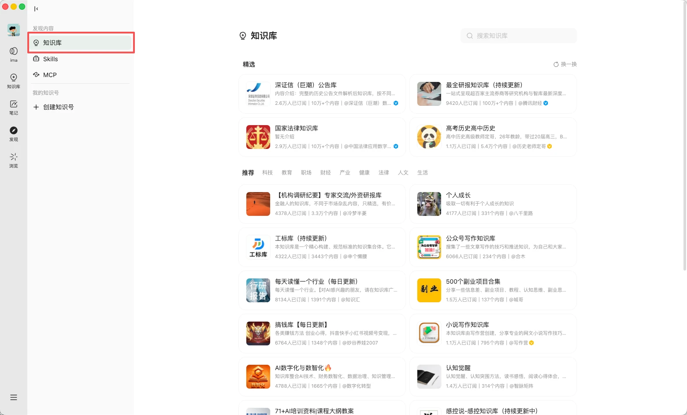
ima发现页订阅知识库
05｜生成学习方案
一句话出方案
订阅一个对口的题库，一句话就能换回一套照着自己弱项排的复习方案。
【大学期末考试知识点复习资料笔记题库课件】
我在阅读理解这一块比较薄弱，请在知识库里检索资料，帮我出一套专项复习方案。
通过添加文件的方式，我们直接引用了ima的知识库。等于把这次检索锁定在这个库里，AI 不会跑到网上找别的资料。示例里这个题库有 3467 份资料，一句话之后左边出对话、右边出《阅读理解专项复习方案》网页，方案里每条内容都标了引用的原文件名。
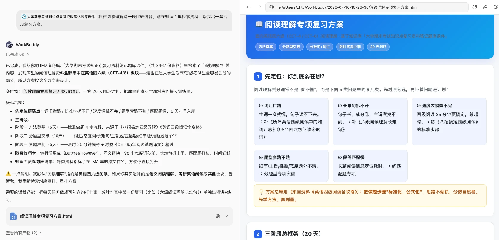
一句话生成阅读理解复习方案
20 天排到每天
拿到方案当天就能开工，做什么、用哪份资料都写在里面。
AI 在出方案的同时生成了配套内容：一份 20 天的每日训练表、一张随身技巧卡和一份资料对应清单，每天做什么、技巧出自哪份资料都写清楚了。
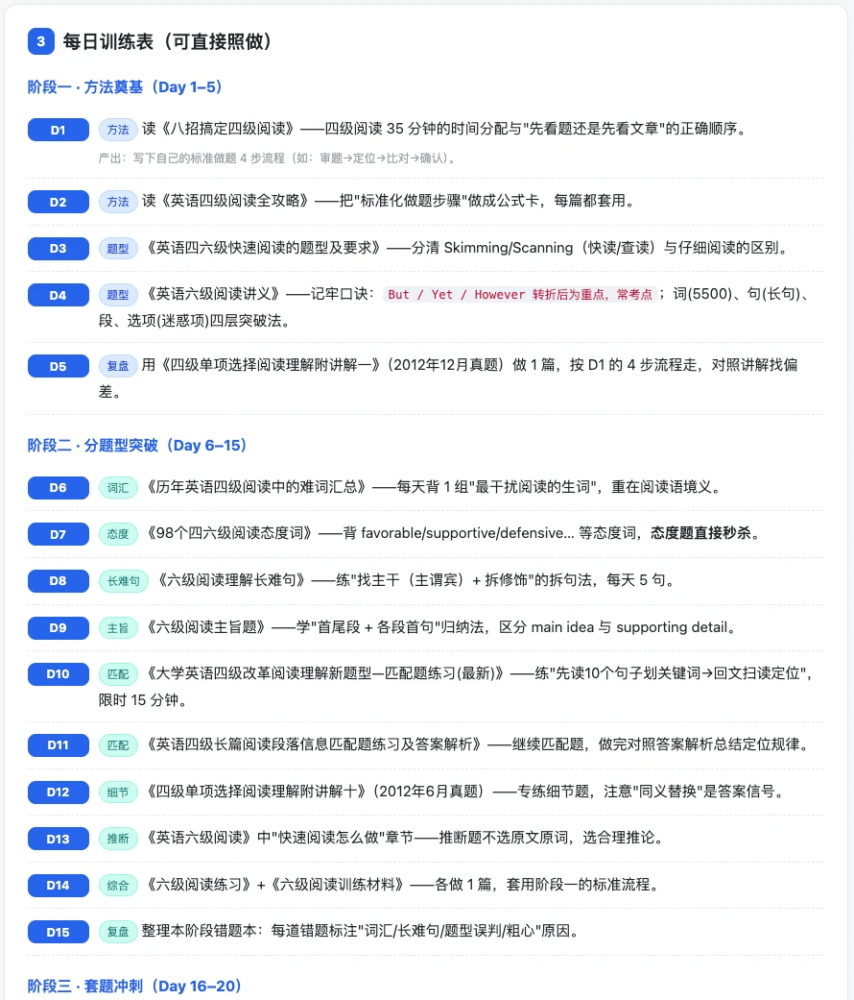
每日训练表
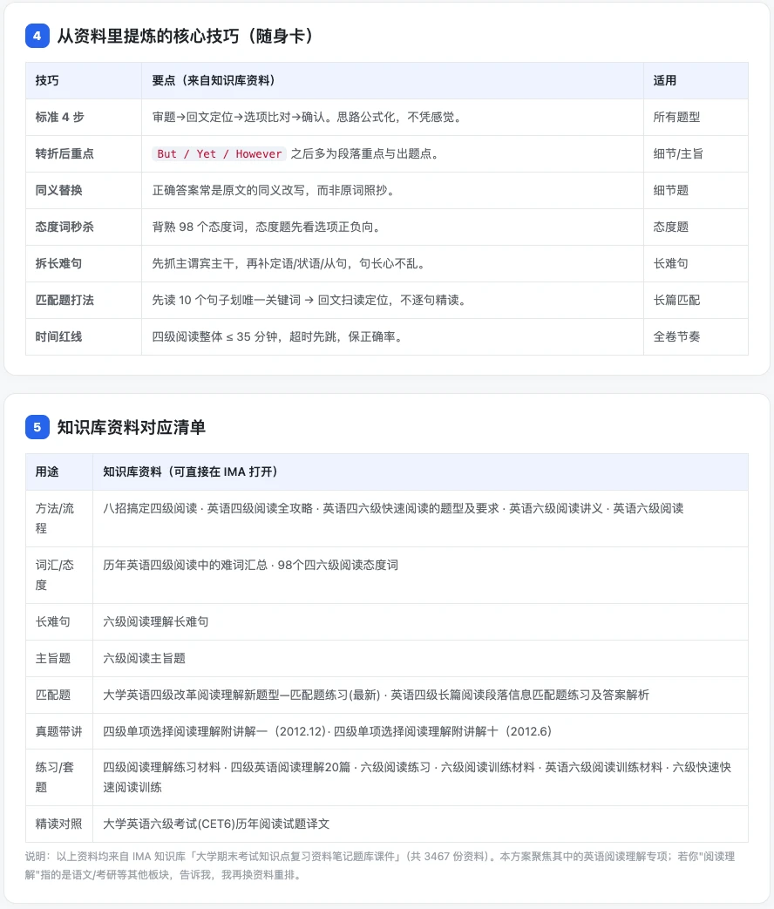
随身技巧卡与资料清单
06｜单份资料精讲
单份资料展开精讲
在同一个任务里接着追问，一份 PDF 就长成一个能直接练的模块。
针对其中一份资料《六级阅读理解长难句》单独出精讲+练习
不用另开任务，接着上一轮对话说就行，AI 已经知道库里躺的是哪几份资料。精讲练习模块会自己带上资料出处，练完还能顺着清单回到原件。
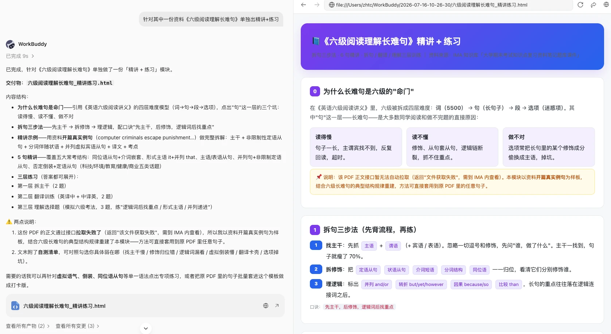
长难句精讲与练习
讲练结构
讲完立刻有题可练，练完还能对着答案回看。
生成出来的模块里，精讲用真句逐层标注主干、修饰和逻辑，练习分三层（拆主干、翻译、模拟选择题），参考答案都能展开，末尾还附一张自测清单。
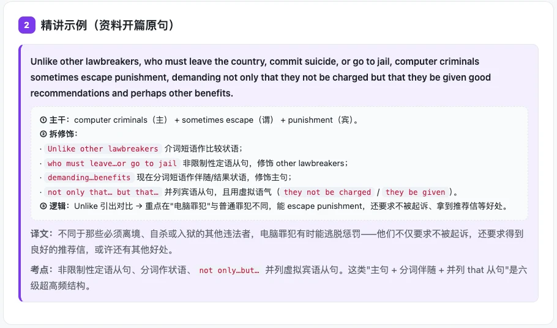
真句主干修饰逻辑标注
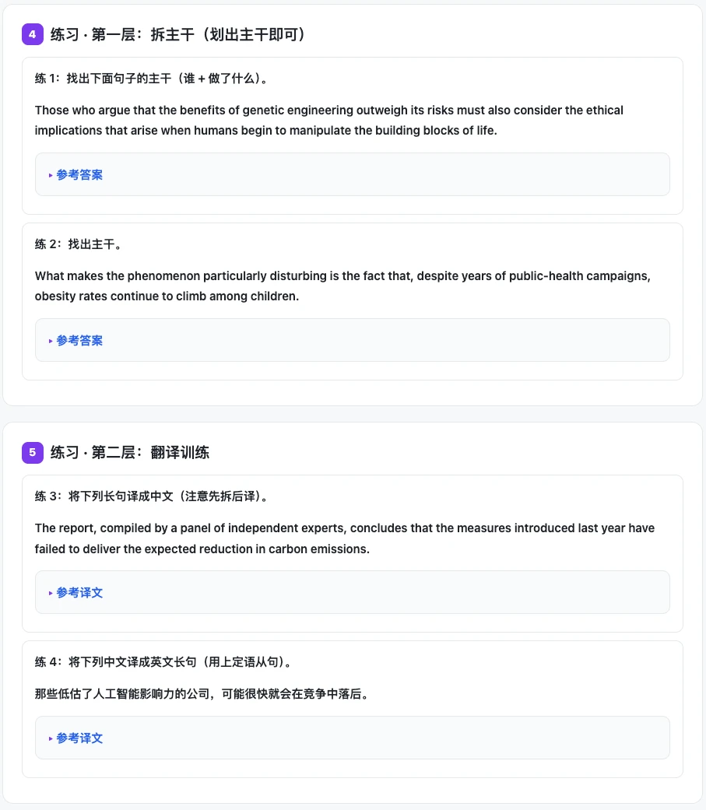
三层练习题
07｜接库前后
同样一句「帮我复习」，接上知识库前后是两回事。
资料可靠：AI 只在订阅的题库里检索，方案和精讲的每条内容都标注来源文件，翻回去就能查到原文。
方案可执行：落到每天做哪份资料、哪类题型，做完能勾掉，第二天接着做下一份。
还能接着问：默认方向不对，或者想换成语文、考研英语，一句话就能重新检索、重排方案。
第三部分｜建自己的库
08｜按任务建库
别一上来就建「我的资料库」这种大而全的库，先想清楚它要服务什么任务。
课程复习：教材、课件、笔记、真题攒在一处，考前让 AI 出复习方案。
社团活动：策划案、预算表、往届总结都放进库，办活动直接翻。
实习求职：简历各个版本、岗位信息、面经归成一库，投递前问一圈。
毕业论文：文献、开题材料、导师意见集中管，写作时随时引用。
按任务建的库检索范围小、资料相关，AI 给的东西才贴题。起步就挑近期明确要完成的那件事：这周要筹备社团招新，就先建招新的库。
09｜首批入库标准
第一批放 10 到 20 条就够，进库前把好三道关。
信息完整：成套的课件、完整的策划案优先进库，七零八落的截图先放一放。
来源清楚：官方文件、老师发的资料、自己写过的内容，知道出处才敢让 AI 引用。
近期有效：课表、规定、模板都用最新版，跟主题无关的东西别混进同一个库。
资料不够用就两条路：去广场订阅现成库，或者让 WorkBuddy 先搜一批资料，你挑着放进库。
10｜手机随手进库
建库不挑设备：微信里传的小组资料，手机上选中就进库。
- 手机打开知识库，进到目标库点加号，拍照、录音、微信文件、网页链接都能加。
- 选「微信文件」，从聊天记录里勾选要留下的资料。
- 确认之后文件进库，电脑端打开同一个库就能看到。
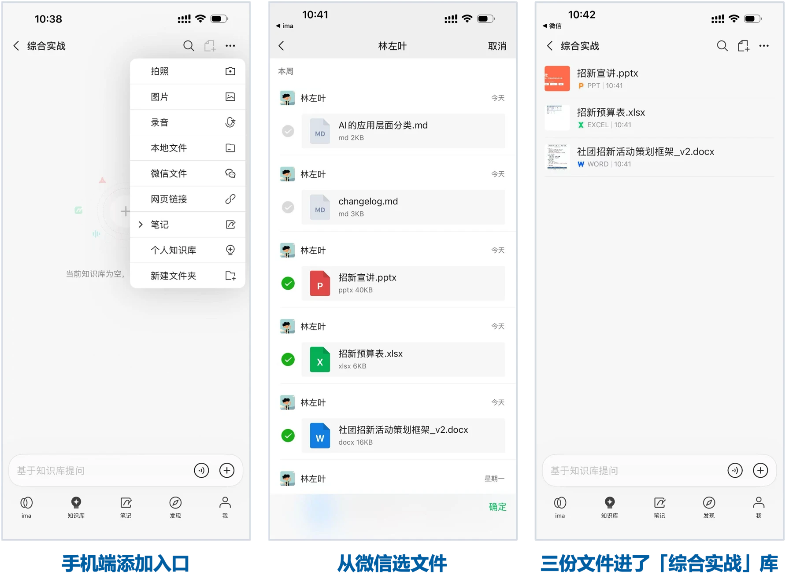
11｜随手记进库
除了导入现成文件，知识库里还能直接新建笔记。
电脑端在库里的内容添加入口选「笔记 › 新建笔记」，写完就存在这个库里。课上记的笔记、组会记录、灵感碎片，随手记下来都是可检索的资料，之后引用起来跟导入的文件一样好使。
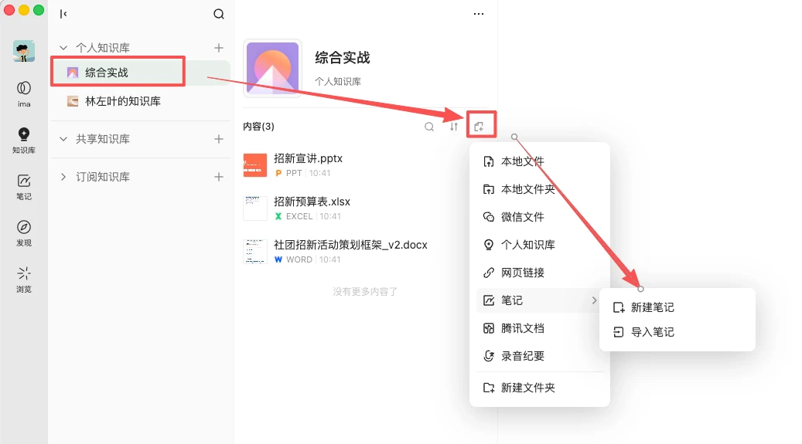
新建笔记
12｜产物存回
WorkBuddy 做完的方案、笔记、报告，一键存回知识库，下次接着用。
在产物右上角点上传，选「ima 知识库」，挑一个库确定就存好了。存回去的东西成了库里的资料，下一轮做同类任务时 AI 能直接检索到上一次的成果，同一件事不用从头再做一遍。
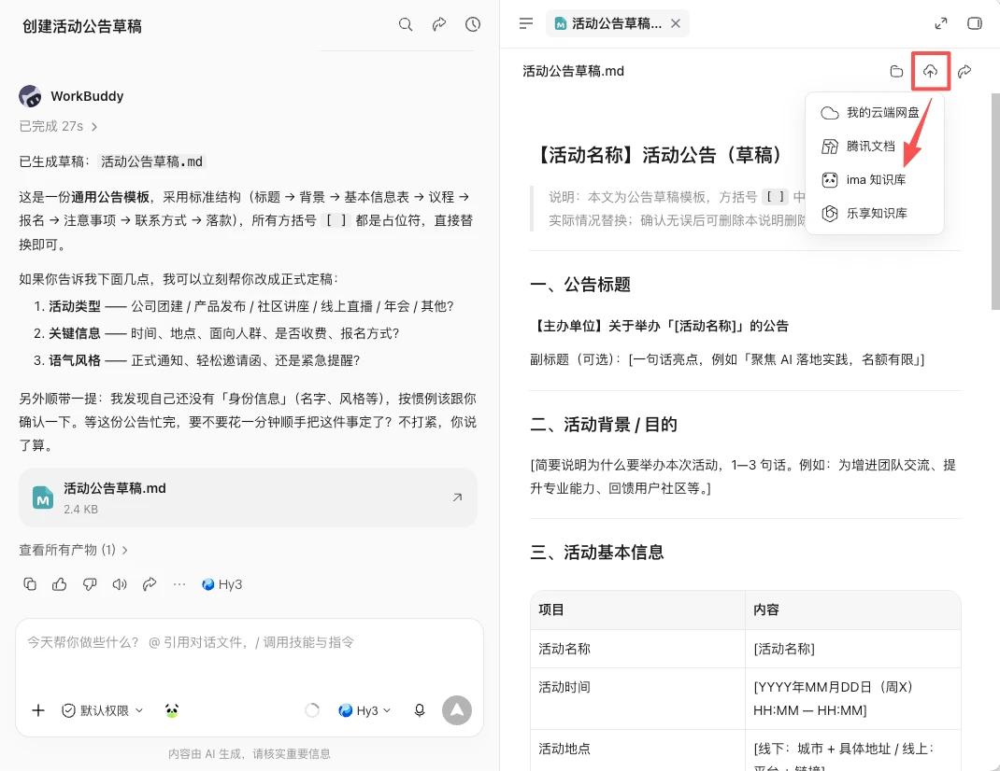
产物上传到ima知识库
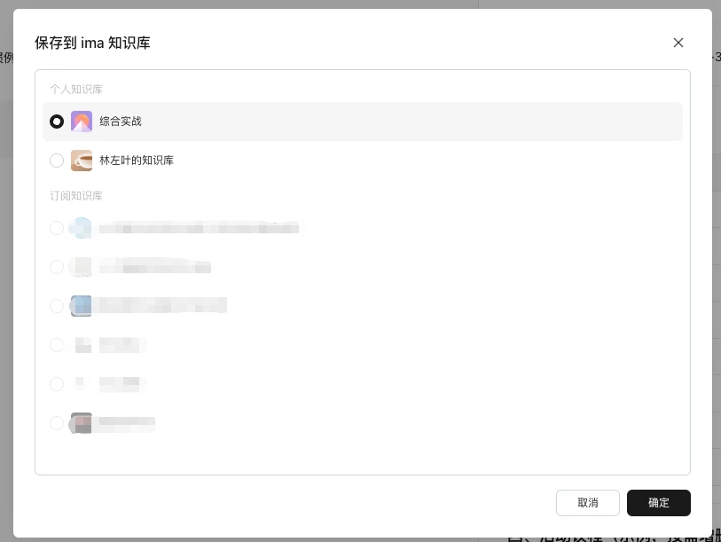
选择要存入的库
小结
- 连上知识库：一次授权，WorkBuddy 直接检索引用 ima 里的资料。
- 用现成的库：订阅一个对口题库，一句话拿到针对弱项的复习方案和精讲练习。
- 建自己的库：按任务建主题库，微信文件、随手笔记都能进来，产物也能存回。
- 越用越准：库里的资料越厚，AI 的回答越贴着你自己的情况。